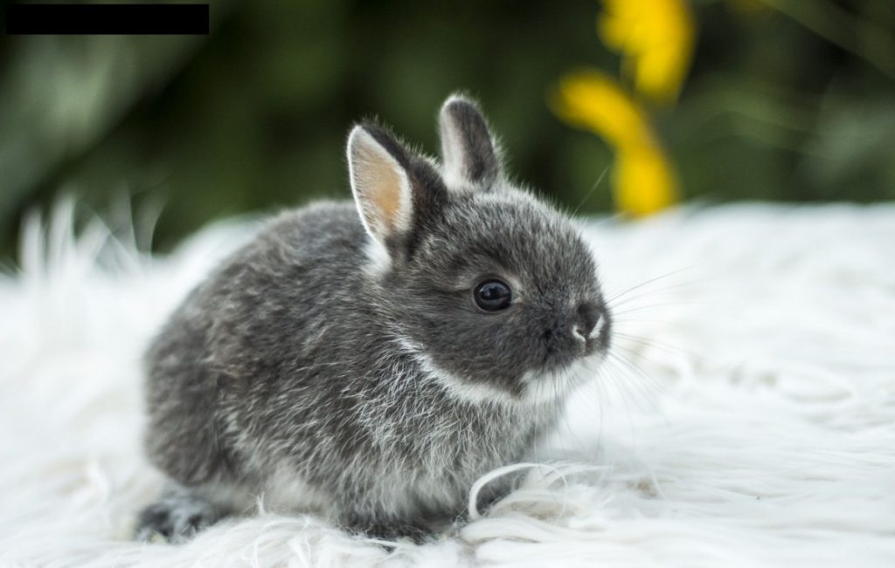
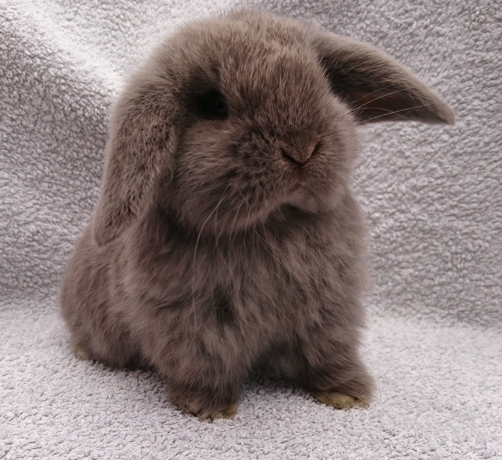
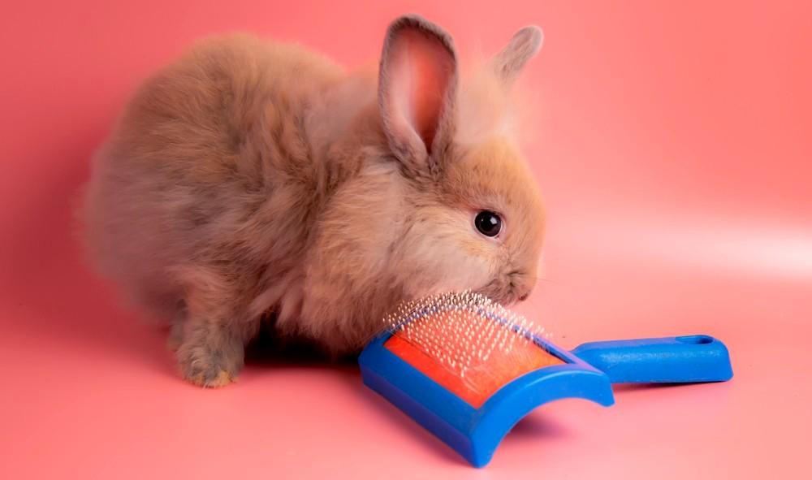
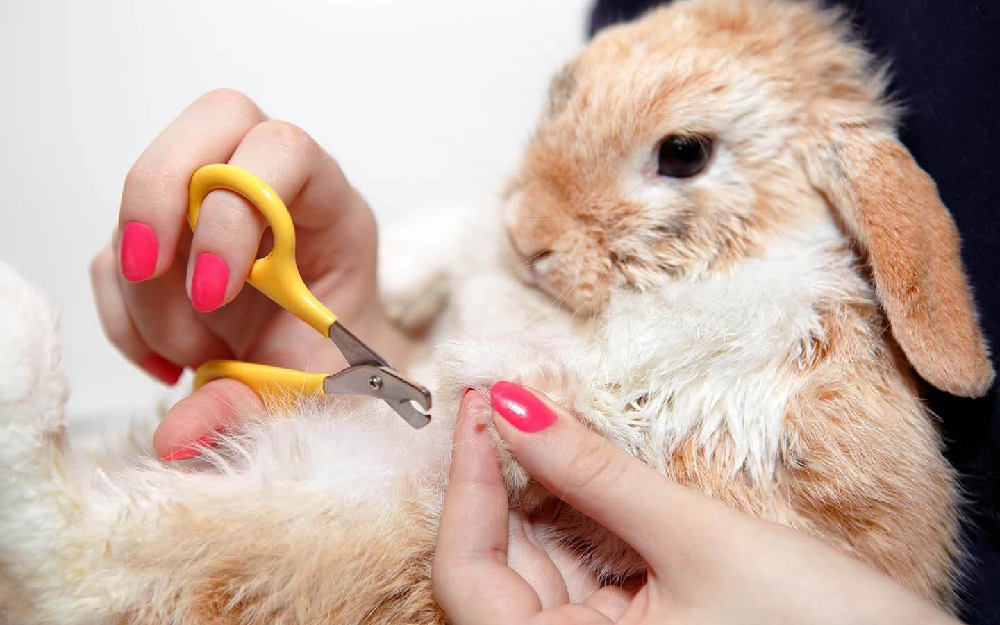

Как содержать кроликов в домашних условиях
При должном уходе кролики живут до 13 лет.
Содержание кроликов, как и других домашних животных, регулируется законом. Он предписывает гуманное и ответственное отношение к питомцу и обеспечение его всем необходимым.
Содержание кроликов, как и других домашних животных, регулируется законом. Он предписывает гуманное и ответственное отношение к питомцу и обеспечение его всем необходимым.
В классификации Союза заводчиков и селекционеров указано около 40 пород кроликов, которых можно содержать дома. В первую очередь, они различаются размерами: чем крупнее кролик, тем больше ему нужно еды и места для комфортной жизни. В качестве домашних питомцев берут, как правило, небольшие породы — до 2 кг.
Вот несколько самых популярных пород декоративных кроликов:
- Минор — миниатюрная порода весом до 1,2 кг. У таких кроликов выразительные и крупные глаза и достаточно короткие уши — до 6 см.
- Минилоп — кролик весом до 1,6 кг с широкими, массивными опущенными вниз ушами, скругленными на конце.
- Карликовый хохот — относительно редкая порода декоративных кроликов весом до 1,4 кг. У карликового хохота белый окрас, а глаза как будто обведены черным либо темно-коричневым карандашом.
- Бархатный минирекс — порода с плотной бархатистой шерстью и длинными, до 9 см, вздернутыми вверх ушами. Взрослый минирекс весит до 2 кг.
- Карликовый вислоухий кролик, он же — карликовый баран, внешне очень похожий на минилопа. Карликовый баран может вырасти до 3,5 кг, у него более вытянутые мордочка и тело.
какого кролика вы бы хотели себе завести?

минор

минилоп

карликовый хохот

Бархатный минирекс

карликовый вислоухий кролик
Конечно, кролик должен понравиться, поэтому выбирают визуально: сильных различий в характере в зависимости от породы, как у собак, не будет.
В естественной среде кролики живут группами: это социальные животные. Они чувствуют себя хорошо и уверенно, когда могут общаться с другими кроликами — вместе играть или добывать еду. Бывают и асоциальные кролики, но это большая редкость.
Пара кролику нужна. Но если это ваш первый опыт ухода за кроликом, не покупайте сразу двух. Сначала оцените свои ресурсы на содержание одного животного, возможность его кастрировать и лечить.
Особенности кастрации кроликов
Кастрация — удаление репродуктивных органов. У самок животных удаляют яичники, иногда вместе с маткой. Самцам удаляют семенники. Операцию проводят под общим наркозом, когда животное достигает половой зрелости.
Вот какие проблемы помогает решить кастрация:
- Некастрированные животные могут метить территорию — распылять мочу, оставляя свой запах, и таким образом обозначать границы владений. Причем метить могут как самцы, так и самки.
- Если дома несколько некастрированных самцов, драк не избежать.
- Контроль рождаемости, если дома живут разнополые кролики.
- Кастрация помогает сократить риск развития онкологических заболеваний и заболеваний репродуктивных органов.
Еще кастрация помогает избежать ложной беременности у самок. Это состояние, когда животное испытывает ощущения, характерные для беременности, хотя плода в матке нет. Это чревато проблемами со здоровьем. Кроме того, кастрированные кролики реже проявляют агрессию к людям и сородичам.
Оптимально проводить операцию с пяти месяцев, когда кролик считается половозрелым, но не позднее двух лет. Чем старше животное, тем выше риск возникновения осложнений от наркоза. Чтобы убедиться, что у кролика нет противопоказаний к операции, ветеринар может рекомендовать дополнительные обследования: анализ крови и УЗИ сердца.
Операция у самцов длится примерно 20 минут, а у самок — около часа. Кролика возвращают хозяину в тот же день, как только он выйдет из наркоза. Стоимость процедуры зависит от региона и составляет в среднем 3000 ₽ для самцов и 6000 ₽ для самок.
Период реабилитации несложный: важно соблюдать все рекомендации ветеринара, обеспечить кролика хорошим сеном и аккуратно осматривать швы, не допуская попадания грязи и нагноения. Если возникли подозрения относительно внешнего вида шва, нужно обратиться к ветеринару.
На что обратить внимание при выборе заводчика?
Когда вы определились с породой кролика, нужно искать заводчика, который ее разводит. Но можно пойти и другим путем: найти заводчика и уже на месте выбрать понравившегося кролика.
Членство в профессиональных сообществах. Например, в уже упомянутом Союзе заводчиков и селекционеров. Это значит, что заводчик заинтересован в том, чтобы разводить здоровых и чистопородных животных. Членство в такой организации подтверждать документ.
Соцсети заводчика. Там можно оценить условия, в которых живут кролики, посмотреть на уже подросших «выпускников» и забронировать питомца.
Результаты бонитировки. Бонитировка — процедура определения племенной ценности кроликов. Ее могут делать в любом возрасте. Бонитировка важна, если вы планируете заниматься разведением или участвовать в выставках. Во время бонитировки эксперт оценивает вес и внешний вид животного: форму ушей и головы, длину шеи, качество шерсти и другие параметры.
По результатам бонитировки кролика относят к одному из трех классов:
- Шоу-класс — от 96,5 до 100 баллов. Это самые ценные и дорогие кролики.
- Брид-класс — 90—96 баллов.
- Пет-класс — до 90 баллов. Это домашние питомцы, которые не завоюют наград на выставках и не подлежат разведению. Но если таких задач не стоит, можно брать.
Даже кролик с идеальной родословной может не соответствовать породе. Например, весить на 200 граммов больше нормы. В этом случае он не получит высокой оценки на выставке, но при этом останется чистопородным кроликом.
С оценкой кроликов сложнее, чем, например, с оценкой породистых кошек и собак. Большую часть баллов дают за вес, а каким кролик вырастет, заводчик наверняка не знает.
Стоимость кролика. Декоративные кролики стоят в среднем от 5000 до 12 000 ₽. Цена зависит от породы, экспертной оценки животного и наличия родословной:
- шоу-класс стоит в среднем 8000—10 000 ₽, иногда дороже;
- брид-класс можно купить за 5000—8000 ₽;
- пет-класс продают за 2000—5000 ₽, в зависимости от породы и заводчика.
При желании можно купить питомца дешевле и даже найти бесплатно, но никто не гарантирует, что вырастет кролик заявленной породы. Например, рассчитывали на карликового кролика до 1,5 кг, а вымахал гигант весом 6 кг. Чаще всего так происходит, когда животное покупают не у заводчиков, а у тех, у кого крольчата родились случайно. Заводчик тоже не может гарантировать, каким будет вес и параметры животного, но больших сюрпризов, скорее всего, не будет.
Я покупала двух кроликов у разных проверенных заводчиков — и оба раза без договора купли-продажи. Этот момент лучше обсудить отдельно с конкретным питомником. Думаю, если вы предложите шаблон договора, добросовестные заводчики не откажутся его подписать.
Ветеринарный паспорт. К тому моменту, когда вы забираете животное, у него должна быть сделана первая комплексная прививка — в возрасте 45 дней.
Информацию о вакцинации и обработке от паразитов вносят в ветеринарный паспорт — с печатью клиники и наклейкой с упаковки препарата.
Вакцинация кроликов проводится в два этапа с интервалом в 14 дней.
Как обустроить домик для кролика
Кролики могут жить в вольере, просторной клетке или просто в квартире. Последний вариант требует подготовки: на первое время придется спрятать провода и другие опасные предметы и научить кролика не грызть ничего в доме.
Еще кролику понадобятся миски, лоток и сенник.
Сенник — это специальное место, куда кладут сено. Он нужен, чтобы сено оставалось в чистоте: не смешивалось с опилками, водой и «горошинками».
Миски лучше всего покупать керамические: их не нужно менять раз в три месяца в отличие от пластиковых и металлических. Поилки бывают двух видов: ниппельная подает воду капельками, чашечная — стоит на полу, как обычная миска для корма. Когда кролик пьет из чашечной поилки, его поза более физиологична, но из такой поилки легко разлить воду, а еще в нее будет попадать мусор. К ниппельной поилке животному нужно привыкнуть, но с ней зверек не сможет разлить воду или закинуть в нее что-нибудь. Ниппельную поилку важно разместить на удобной для питомца высоте — примерно на уровне головы.
Лотки бывают обычные и угловые. Вторые удобнее закрепить в клетке или вольере, и кролик в процессе игры его не перевернет. Стоят такие 300—500 ₽.
В лоток нужен наполнитель, который будет впитывать мочу. Для кроликов подойдет древесный наполнитель, он стоит 200—250 ₽ за три литра. Меняют наполнитель по мере загрязнения, упаковки хватает примерно на месяц.
Как ухаживать за кроликом
Я трачу на уход за кроликами 30 минут ежедневно. Еще час в выходные — на процедуры, которые нужны раз в неделю. Вот что нужно делать, чтобы кролику жилось комфортно.
Следить за рационом. Основа рациона кроликов — сено. В нем не должно быть ядовитых трав — безвременника, чистотела, наперстянки, молочая и других. Поэтому лучше покупать сено в зоомагазинах. Я, например, выбираю марку «Родные корма» — 250 ₽ за 20 литров.
Сено и вода всегда должны быть в свободном доступе у кролика.
Также существует сухой корм, или комбикорм. В зоомагазинах много его вариаций, но лучше выбрать тот, что рекомендовал заводчик. Пищеварительная система кролика уже адаптирована к конкретному корму, и смена рациона не станет еще одной причиной стресса для животного.
Важно следить за порциями корма. Кролики не всегда контролируют количество съеденного, как с сеном, и могут переесть. В случае с сеном кролик не толстеет, чего не скажешь про корм: его переедание чревато диареей и лишним весом. В среднем суточная норма корма для декоративных кроликов — 25 г на 1 кг веса животного. Мы даем Плюше по две столовые ложки корма в день. Пришли к такому размеру порции опытным путем: когда давали больше, она растолстела.
В качестве лакомства можно давать немного сушеных яблок. Раз в неделю мы угощаем Плюшу половинкой кураги: она не только вкусная, но и полезная и помогает избавиться от шерсти в желудке. Еще кроликам можно сушеный одуванчик, клевер, лопух и подорожник. Мы никогда не даем кролику белокочанную капусту и влажную свежую траву: они провоцируют вздутие кишечника. Из-за этого животное может погибнуть.
Можно изредка угощать кролика разными вкусняшками из зоомагазинов: палочками с семенами подсолнечника, спрессованной травой и чем-то подобным. Хотя не все кролики это едят.
Водить к ветеринару. В возрасте 30—45 дней крольчонок получает первую комплексную прививку. Она защитит от вирусной геморрагической болезни кроликов, или ВГБК, и миксоматоза. За 14 дней до вакцинации нужно дать кролику препарат от гельминтов, за 7 дней — провести профилактику кокцидиоза, например препаратом «Стоп-кокцид». Подробнее про заболевания и профилактические обработки я расскажу дальше в статье.

Прививка в ветклинике с предварительным осмотром животного стоит около 1000 ₽. Ревакцинируют кроликов раз в год, но иногда это нужно делать раз в полгода — в зависимости от вакцины и эпидемиологической обстановки в регионе. Ветеринар поможет составить календарь вакцинации.
В России доступны, например, вакцины против миксоматоза «Раббивак-В» и против ВГБК «Раббивак-V», а также комплексные вакцины «Нобивак Myxo-RHD» и ассоциированная вакцина против миксоматоза и ВГБК: кролику сделают одну инъекцию сразу против двух заболеваний. Большинство вакцин для кроликов отечественного производства. Вы можете спросить у администратора ветклиники, какие вакцины у них применяют.
Если кролик активный, с хорошим аппетитом, у него нет видимых симптомов заболеваний, достаточно раз в год приходить на профилактический осмотр к ветеринару. Лучше доверить здоровье своего питомца ратологу — ветеринару, который специализируется на грызунах.
Чистить домик кролика. Для здоровья кролика важно, чтобы в клетке или вольере было чисто. Ее нужно полностью мыть минимум раз в неделю. А вот поильник лучше мыть каждый день.
Мыть самого кролика не нужно: зверек следит за чистотой шерсти как кошка. Исключение — диарея. Тогда кролика можно аккуратно помыть теплой водой под хвостиком.
Ухаживать за шерстью. Если вы выбрали пушистую породу, стоит обзавестись специальной расческой. Она нужна только в период линьки, чтобы помочь животному избавиться от клочков вылетающего пуха. Вычесывают кролика короткими движениями по направлению шерсти. Если вычесывать кролика в обратном направлении, можно повредить шерсть и появятся проплешины.
Линька у кроликов сезонная, самый активный период — весна. Но при неправильном уходе, отсутствии света или грязной клетке пух может лезть круглогодично. Поэтому если вам кажется, что линька у кролика бесконечная, стоит в первую очередь пересмотреть условия, в которых он содержится.
Стричь когти. Кроликам, которые живут дома, нужно подстригать когти раз в одну-две недели. Если этого не делать, они вырастут слишком длинными и животное может травмировать себя или членов вашей семьи во время прогулки по дому.
Также из-за слишком длинных когтей может развиться пододерматит — когда на задних лапах образуются натоптыши, трещины, ранки и язвы. Слишком длинные когти — те, что закручиваются и стучат по полу, когда кролик прыгает.
>Для стрижки когтей можно использовать специальный когтерез, еще вам может понадобиться кровоостанавливающее средство — если вы сострижете слишком много.
Коготь имеет живую и неживую часть. В живой части, или пульпе, расположены кровеносные сосуды и нервные окончания. Если вы сострежете ее, кролику будет больно, и придется останавливать кровотечение. Неживую часть, или роговой слой, стричь можно: животное ничего не почувствует.
Если у кролика белые или прозрачные когти, живую часть хорошо видно: кровеносные сосуды красного цвета. Владельцам животных с темными когтями сложнее: на них пульпу практически не видно. Но пульпа отличается от рогового слоя по структуре, и если срезать по миллиметру, вы увидите на срезе более насыщенную по цвету центральную часть. Это и есть пульпа с сосудами — дальше стричь нельзя.
Выгуливать дома. Если ваш питомец живет в клетке или вольере, ему обязательно нужны прогулки для поддержания физической формы и социализации. Запертый в клетке кролик без регулярного контакта с человеком становится пугливым и диковатым — наладить с ним отношения сложнее.
Чем болеют кролики
Как только в доме появился кролик, рекомендую найти хорошего ветеринара и поддерживать с ним связь. Это поможет предотвратить заболевания или, в случае чего, принять оперативные меры. Вот с какими заболеваниями сталкиваются кролики.
Геморрагическая болезнь кроликов (ВГБК), которую я уже упоминала в разделе о прививках, — острое инфекционное заболевание. Лечения от него не существует. Появляется внезапно и протекает так быстро, что обнаружить симптомы не удается. Кролик до самой смерти может выглядеть здоровым. Именно поэтому важно своевременно вакцинировать животное.
Миксоматоз — другое смертельное заболевание, которое передается через прямой контакт с больным животным, а также через укусы комаров, блох и клещей. От миксоматоза тоже нужно сделать прививку.
Стоматит — воспаление слизистой рта и языка, с сильным слюнообразованием. Среди симптомов — покраснения слизистой рта, белая пенка по краям языка или на верхней губе.
Может протекать в легкой и тяжелой формах. Легкая форма, когда область поражения небольшая, проходит сама за несколько дней. При тяжелой форме кролик может погибнуть, так что при появлении симптомов лучше поспешить к ветеринару.
Вздутие кишечника. Как правило, возникает из-за ошибок в кормлении. Кроликам нельзя давать белокочанную капусту, бобовые, луковичные растения, подгнившую или нагретую траву. Также вздутие часто связано с лишним весом или паразитарными инфекциями.
Симптомы вздутия: урчание в животе и метеоризм, одышка, зубной скрежет и отсутствие стула более 10—12 часов. При легком вздутии ветеринар может рекомендовать препараты с симетиконом или диметиконом. Продолжительные боли в кишечнике могут нарушить кровообращение, и тогда уже применяются гормональные препараты.
Паразиты. Как и все животные, кролики — дом для паразитов. Даже если питомец не гуляет, он может заразиться. Например, если хозяин не помыл руки после улицы или если в доме есть другие животные, которые регулярно ходят на прогулки.
Заметить гельминтов чаще всего можно случайно на кале, так как заражение происходит почти бессимптомно. Если заметили вздутие, понос и потерю веса — скорее всего, в организме много гельминтов и нужно срочно обратиться к ветеринару.
Лучшая борьба с гельминтами — профилактика. Обрабатывать животное от паразитов нужно раз в квартал, а также за две недели до вакцинации. Мы даем кролику суспензию «Шустрик» или «Дирофен-пасту» — стоят они около 300 ₽. Паста густая, и я просто смешиваю ее с небольшим количеством корма. Также можно давать препарат через шприц в пасть кролику, но это сложнее.
Еще одно паразитарное заболевание — кокцидиоз. Он бывает двух видов: печеночный и кишечный. При остром течении кролик страдает от диареи, вздутия, потери аппетита и становится апатичным. На поздних стадиях происходит обезвоживание и сепсис, что чревато смертью. В качестве профилактики кокцидиоза используют ветеринарные препараты с толтразурилом — например, «Байкокс» или «Стоп-кокцид» стоимостью около 300 ₽. Дозировку и частоту приема определяет врач.
Еще у кроликов бывают клещи — меховые, ушные, чесоточные или подкожные. Если животное активно расчесывает определенные места на теле до выпадения шерсти — возможно, это клещи, но точный диагноз поставит только ветеринар. Он же назначит оптимальное для кролика лечение.
Ринит, он же насморк, у кроликов вызывает инфекция. Среди симптомов — покраснение носа, чихание. Если не заниматься лечением, ринит переходит в хроническую форму и может привести к поражению бронхов и воспалению легких.
Перед тем как лечить ринит, необходимо понять, каким возбудителем он вызван, и затем уже использовать подходящий антибиотик. Поэтому нужен ветеринар.
Натоптыши, или пододерматит, — следствие неправильного содержания, когда используют неподходящий настил. Например, слишком твердую подстилку, жесткие ковры, каменные полы или решетчатый пол в клетке. А возможно, не соблюдена гигиена — грязная клетка с постоянно влажным полом.
Чтобы вылечить натоптыши, первым делом нужно сменить настил и вычистить клетку. Если натоптыши появились впервые, лучше обратиться к ветеринару: доктор покажет, как и чем можно обрабатывать рану, чтобы избежать попадания инфекции.